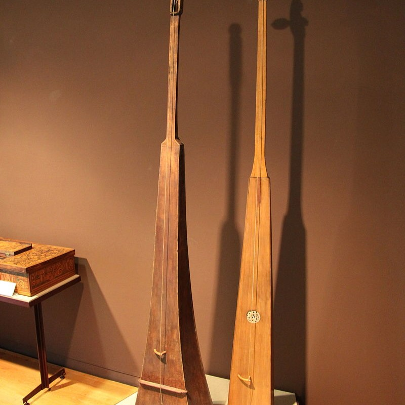

/Piano_History-logos_transparent.png)
The First Step
The monochord is a simple musical instrument that consists of a single string stretched over a resonating chamber or soundboard. It's one of the earliest known musical instruments and has been used for centuries in various cultures around the world. The monochord has been historically significant in various fields, particularly in music theory, acoustics, and philosophy. It was used by ancient Greek philosophers like Pythagoras to study the mathematical relationships between musical intervals. Pythagoras discovered the mathematical foundation of musical intervals through experiments with a monochord, leading to the development of the Pythagorean tuning system. In addition to its role in music theory, the monochord has been used as a teaching tool to demonstrate musical concepts, intervals, and harmonics. It has also been employed in meditation, healing practices, and sound therapy due to its simple yet resonant sound.
Monochord
The First Piano
The clavichord is a keyboard instrument that originated in the late Medieval period and gained popularity during the Renaissance and Baroque eras. Its development was an evolution from earlier stringed keyboard instruments, such as the monochord. The clavichord consists of a series of keys that, when pressed, cause small metal blades called tangents to strike the strings. The strings are stretched across a soundboard, and the tangents directly touch the strings, producing sound vibrations. One unique feature of the clavichord is its ability to produce dynamic variations in volume and expression, known as "touch sensitivity." The player can control the volume and timbre by varying the pressure applied to the keys. During the Baroque period, the clavichord was a popular instrument among composers, performers, and music enthusiasts. It was valued for its expressive capabilities and its suitability for practicing keyboard techniques and ornamentation.
Clavichord
The Popular Piano
Yes, although the clavichord was first and had its popularity during the Renaissance and Baroque eras, it was quickly dethroned by the harpsichord due to its louder sound and improved dynamic range. The key development in the harpsichord's evolution was the introduction of a plucking mechanism. Instead of striking the strings with tangents as in the clavichord, the harpsichord's mechanism used quills or plectra to pluck the strings when keys were depressed, creating its characteristic sound. This innovation allowed for greater control and versatility in producing sound and dynamics. During the Baroque era, the harpsichord reached its peak in terms of craftsmanship, variety, and musical significance. It was widely used by composers, performers, and enthusiasts in both solo and ensemble settings, leaving a rich legacy of music written specifically for the instrument.
Harpsichord

Before The Piano
The pivotal moment in the development of the fortepiano occurred in the early 18th century when Bartolomeo Cristofori, an Italian instrument maker, invented the earliest version of the piano. Cristofori's invention, known as the "gravicembalo col piano e forte" or harpsichord with soft and loud, was an innovative keyboard instrument that utilized a hammer action mechanism. This mechanism allowed the hammers to strike the strings when keys were pressed, offering the ability to play both softly (piano) and loudly (forte). The fortepiano's popularity and use expanded throughout the 18th century. Its versatility and ability to produce nuanced dynamics attracted the interest of composers such as Mozart, Haydn, and early Beethoven, who composed music specifically for the fortepiano.
Fortepiano

How It Functions
The piano mechanism is a sophisticated system comprising a keyboard, action mechanism, strings, hammers, dampers, and pedals. When a key is pressed, it activates a series of intricate components within the action mechanism, translating the key's downward motion into an upward movement of a hammer. The hammer, covered in felt, strikes the corresponding strings stretched across the soundboard, causing them to vibrate and produce sound. Simultaneously, the dampers lift from the strings, allowing them to resonate freely. As the key is released, the damper returns, stopping the string's vibration. The piano's pedals, including the sustain pedal for prolonging sound, the una corda pedal for changing tonal quality, and the sostenuto pedal for sustaining selected notes, further enhance the instrument's expressive capabilities. This complex interplay of components enables the piano to generate a wide range of dynamic, nuanced tones, making it a versatile and expressive musical instrument.